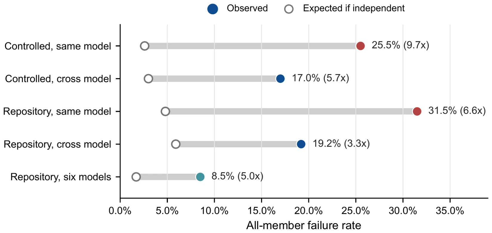
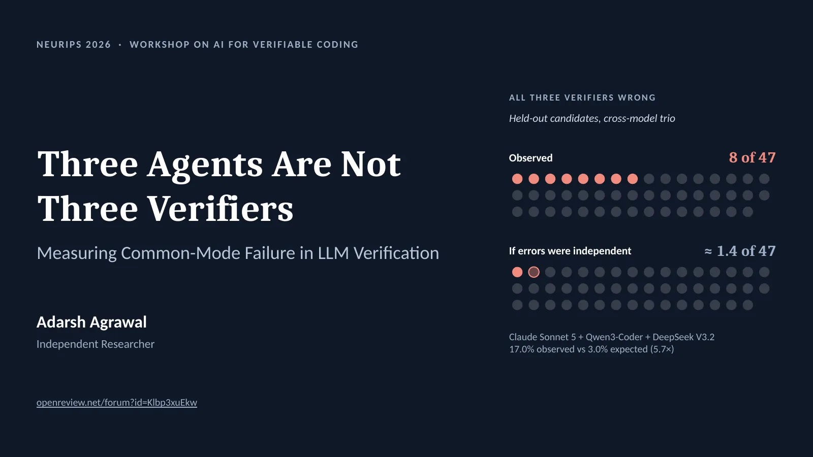
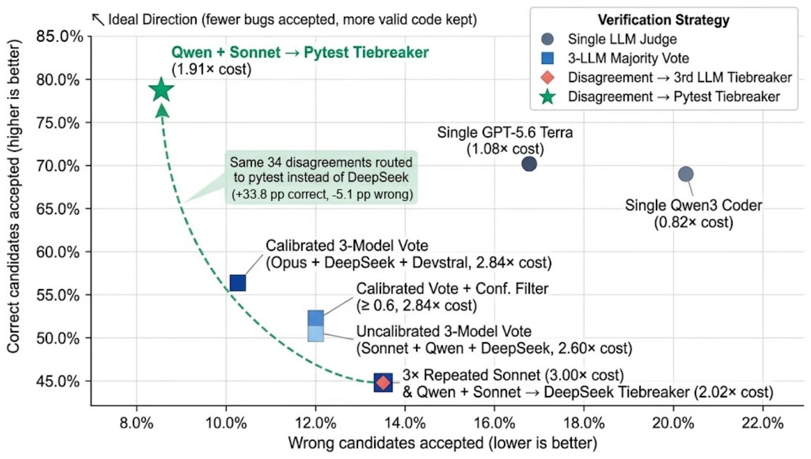
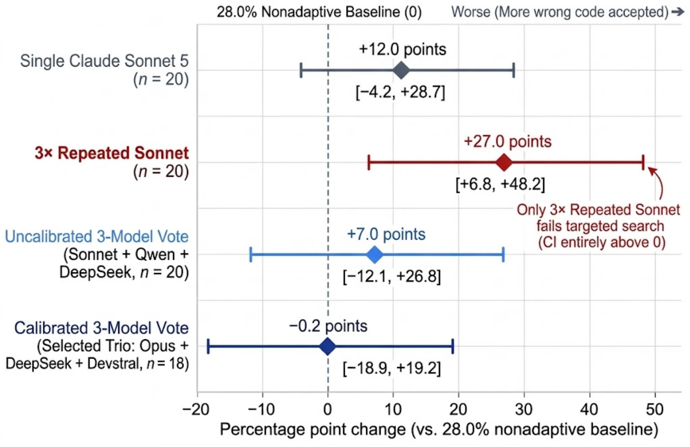

Poster at the NeurIPS 2026 Workshop on AI for Verifiable Coding
Three Agents Are Not Three VerifiersMeasuring Common-Mode Failure in LLM Verification
Three LLM verifiers that agree are not three independent checks. On 47 held-out candidates, a cross-model trio was wrong all at once on 8 (17.0%), against the 3.0% that independent errors would predict. Routing disagreements to pytest instead of another model raised correct acceptance by 33.8 points and cut wrong acceptance by 5.1, at lower cost.

Abstract
Agreement among LLM verifiers is not independent evidence of correctness. We measure common-mode failure using 1,152 judgments from six models on executable code and proof artifacts, alongside 141 candidates from 47 Python repositories. Across controlled and repository studies, joint failure is 3.3–9.7 times the rate expected under independence. Statistical tests and robustness analyses establish a consistent pattern: model diversity reduces shared errors, but additional votes do not eliminate them. Changing the checking mechanism produces a stronger operating point. On repository candidates with resolved initial labels, routing Qwen3-Coder and Claude Sonnet 5 disagreements to pytest instead of a third model raises correct acceptance by 33.8 percentage points and lowers wrong acceptance by 5.1 points at lower normalized cost. This advantage persists with pytest-independent labels and external adjudication. Targeted mutation search further exposes the weakness of repeated voting: across three generators, repeated-model verification raises accepted-but-wrong rates by 17–27 percentage points above the nonadaptive baseline, while calibrated cross-model voting remains within three points. These findings establish shared-error measurement and mechanism-diverse checking as central design requirements for reliable LLM verification. Verification strength depends on the independence of the checks, not simply on how many models agree.
Key findings
- 3.3–9.7×
All-member failure relative to the independence product, across the controlled and repository studies. For the held-out cross-model trio the ratio is 5.7×, with a 95% delta-method interval of [2.4, 13.8]×; a cluster-preserving permutation test gives p = 0.002.
- 15 of 15
Model pairs whose errors are positively correlated on the held-out set (φ = 0.29–0.58). One shared factor explains 61% of cross-model error variance, and joint failure rises from 0 of 19 easy candidates to 6 of 12 hard ones.
- +33.8 pp
Gain in correct acceptance across all 130 labeled repository candidates when the 34 disagreements between Qwen3-Coder and Claude Sonnet 5 go to pytest rather than DeepSeek V3.2: from 45.1% to 78.9%. Wrong acceptance falls from 13.6% to 8.5%, and expected cost drops from 2.02 to 1.91 median Sonnet calls.
- +24.4 pp
Accuracy advantage of pytest routing on 41 candidates whose labels do not depend on pytest (82.9% versus 58.5%). After external adjudication of all 11 disputed labels, the policy scores 83.0% accuracy on all 141 candidates.
- +17 to +27 pp
Increase in accepted-but-wrong mutations for three repeated Claude Sonnet 5 votes under targeted search, across three mutation generators, over a 28.0% nonadaptive baseline. The calibrated cross-model vote stays within 3 points.
Talk slides

Measuring shared error
A vote adds evidence only when its members rarely fail together. The study measures all-member failure, the share of candidates on which every verifier in a panel S is wrong, and compares it with the rate expected if member errors were independent:
JF(S) = (1/n) Σx Πi∈S ei(x) versus JFind(S) = Πi∈S pi
A ratio above 1 means common-mode failure. Six verifier models (Claude Sonnet 5, Claude Opus 5, Qwen3-Coder, DeepSeek V3.2, Devstral 2, and GPT-5.6 Terra) take part in three linked studies:
- Controlled executable study
- 1,152 judgments on 64 artifacts from 23 task groups: 16 Verus, 24 Lean, 12 SMT, and 12 repository patches with pinned pytest outcomes, split into 17 calibration and 47 held-out candidates.
- Repository study
- 141 candidates from 47 popular PyPI packages, labeled with full tests, downstream tests, and two blinded expert reviews (κ = 0.73). 130 have resolved labels: 71 correct and 59 wrong.
- Targeted mutation search
- Three generators propose return substitutions, boundary shifts, branch flips, and off-by-one errors. Each policy gets up to 500 attempts and stops after 20 accepted mutations or, once at least 15 are accepted, after 100 consecutive rejections.
A different checker beats another vote
On 130 repository candidates with resolved labels, model-only policies trade one error for another. Against a single GPT-5.6 Terra judge, the calibrated three-model vote cuts wrong acceptance from 16.9% to 10.2%, but correct acceptance falls from 70.4% to 56.3%. Changing the mechanism moves the operating point instead. Qwen3-Coder and Claude Sonnet 5 disagree on 34 of the 130 candidates. Sending those cases to the repository’s pytest suite gives the full policy 8.5% wrong acceptance, 78.9% correct acceptance, and 84.6% accuracy across all 130; sending them to DeepSeek V3.2 instead gives 13.6%, 45.1%, and 63.8%.

Targeted search exploits repeated voting
An adversary who searches for mutations a policy will accept finds the blind spots of repeated voting. With Claude Sonnet 4.7 generating mutations, three repeated Claude Sonnet 5 votes accept wrong code 27.0 points above the 28.0% nonadaptive baseline (95% CI [6.8, 48.2]), the only interval entirely above zero. Across all three generators the increase is 17 to 27 points, while the calibrated cross-model vote stays within 3 points of the baseline.

Using this in practice
The paper’s recommended workflow for deploying LLM verifiers:
- Use the same labeled examples. Evaluate every candidate verifier on one shared, labeled candidate set.
- Report joint, not marginal, error. Compare all-member failure with the independence product.
- Pick a cost-aware operating point. Use the relative cost of wrong acceptance and correct rejection in your application.
- Measure before you route. Here, sending Qwen3-Coder and Claude Sonnet 5 disagreements to pytest beat sending them to DeepSeek V3.2, but that does not make execution universally better. Measure joint failure on your own candidates before choosing a routing strategy, and re-evaluate after changing prompts, providers, or model versions.
Scope and limitations
- Scope
- Executable formal artifacts and Python repositories with pytest suites. Rates are distribution-specific, so measure joint error on your own data.
- Small samples
- Seventeen calibration candidates; the adaptive search uses three generators, four mutation operators, and up to 20 accepted mutations per policy.
- Shared pytest
- pytest informs both the reference labels and the routing policy. Independent labels and external adjudication mitigate this overlap but do not remove it.
- Hosted endpoints
- Results reflect provider-specific serving. In an 11-day repeat check, 46 of 48 decisions held.
Reproducibility
The source archive on this site contains the manuscript source, the figure script, the aggregate values used in the manuscript, and reproducibility notes on models, decoding settings, and policy definitions. The anonymized supplement attached to the OpenReview submission adds candidate-level evaluation records, verifier and policy decisions, configuration files, analysis code, tests, and documented offline commands for reproducing the reported analyses.
This page follows the NeurIPS 2026 workshop version of the paper on OpenReview. The site also hosts a preprint version (PDF).
Cite this paper
@inproceedings{agrawal2026diverseverification,
title={Three Agents Are Not Three Verifiers: Measuring Common-Mode Failure in LLM Verification},
author={Agrawal, Adarsh},
booktitle={NeurIPS 2026 Workshop on AI for Verifiable Coding: Human-Aligned Collaborative Agents for Autoformalization, Proofs, and Heuristics},
year={2026},
url={https://openreview.net/forum?id=Klbp3xuEkw}
}